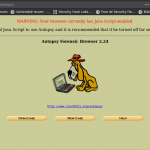

Security Hack Labs
Seguridad informática, privacidad, anonimato, hacking ético, programación
y sistemas operativos en general.
|
 |
Herramientas de análisis forense informático con Kali Linux
|  |
En muchos casos se piensa en Kali Linux, es una de las distribuciones
Linux más populares disponibles para los profesionales de la seguridad.
Contiene todo el paquete sólido de programas que se pueden usar para
realizar una serie de operaciones…
|
La verdad tras el “Zero-day” en Telegram para Windows y OS X
 |
Hace unos días se dió a conocer a nivel mundial una gran cantidad de
noticias acerca de un fallo de tipo 0-day en la aplicación de mensajería
Telegram para las plataforma Windows y OS X. La noticia decía lo
siguiente:…
|
SecHackLabs – Linux Hardening: El init e inicio de servicios.
 |
La mayoría de sistemas operativos vienen con un gran número de servicios
que inician automaticamente durante el proceso de arranque. Obviamente,
varios de ellos son actualmente importantes para la funcionalidad del
sistema, otros son designados con la finalidad de iniciar…
|
Mas...
|